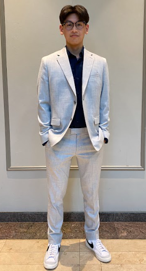

About Me
IT Student
I am an Information Technology student with a strong focus on cybersecurity and software development. My background includes coursework in data structures, web development,and more. Complemented by independent projects that showcase both technical proficiency and attention to detail. I am a self-motivated individual with a commitment to continuous learning and a strong interest in emerging technologies, including AI and digital security.